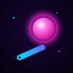

ポケットピンボール
ネオンが光る爽快ピンボール（iPhone）
サポート
「ポケットピンボール」は、ネオンが光る台でボールを打ち返し、コンボ・フィーバー・ジャックポット、そしてボス戦をめざすピンボールゲームです。
App Store でダウンロード（無料）
あそびかた
- 画面の左半分を押すと左のフリッパー、右半分を押すと右のフリッパーが動きます。
- ボールを打ち出すときは、右下の「LAUNCH」ボタンを押し続けて、離します。長く押すほど強く飛びます。
- 画面を上にさっとはらうと、台をゆらせます（ゆらしすぎると TILT になります）。
- 左上の「PAUSE」で一時停止します。音・振動・音量の設定や「タイトルに戻る」も、ここにあります。
やりこみ要素
- SHOP：遊んで貯めたコインで、ボールの見た目や台の色を手に入れます。
- AWARDS：条件を満たすと解除される実績です。
- DAILY：毎日変わるお題です。クリアするとコインがもらえます。
- レベル：ゲームを終えるたびに経験値がたまり、レベルが上がります。レベルでしか手に入らない見た目もあります。
- RANKING：タイトル画面の左上から、Game Center のランキング（ハイスコア・ボスを倒した累計数）を見られます。
よくある質問
- 記録やコインはどこに保存されますか？
- お使いのiPhoneの中に自動で保存されます。開発者のサーバーには送られません。Game Center にサインインしている場合だけ、ハイスコアとボスを倒した累計数がランキングのために Apple へ送られます。
- 機種変更したときにデータを引き継げますか？
- iCloudバックアップ、またはパソコンでのバックアップから新しいiPhoneを復元すると、ゲームのデータも一緒に引き継がれます。アプリを削除するとデータも消えるので、ご注意ください。
- 広告は必ず見る必要がありますか？
- いいえ。広告は、ゲームオーバーのときに「コイン2倍」や「もう1球」を使いたいときだけ、ご自身で選んだ場合に流れます。プレイ中に広告が出ることはなく、見なくても最後まで遊べます。
- 課金はありますか？
- ありません。コインは遊んで貯めるもので、ボールの見た目や台の色を手に入れるのに使います。
- 音が出ません
- 左上の「PAUSE」を押して、設定の「SOUND」がオンになっているか確かめてください。iPhoneの消音モード（横のスイッチ）がオンになっていると、音が出ないことがあります。
- ランキングに記録が載りません
- ランキングは Game Center を使います。iPhoneの「設定」＞「Game Center」でサインインしてから、もう一度遊んでください。サインインしていなくても、ランキング以外はすべて遊べます。
- 画面がちらついて見づらい
- iPhoneの「設定」＞「アクセシビリティ」＞「動作」で「視差効果を減らす」をオンにすると、画面のゆれや光の演出をひかえめにします。
お問い合わせ
不具合のご報告やご意見は、下記のメールアドレスまでお送りください。お使いのiPhoneの機種とiOSのバージョンを書いていただけると、調査がスムーズです。
メール：nkmrkoubou@gmail.com